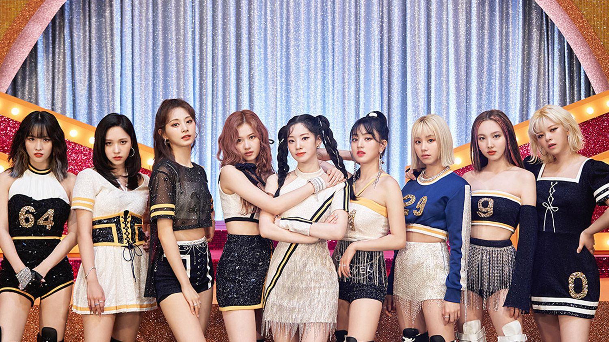

Twice (Korean: 트와이스) is a South Korean girl group formed by JYP Entertainment. The group is composed of nine members: Nayeon, Jeongyeon, Momo, Sana, Jihyo, Mina, Dahyun, Chaeyoung, and Tzuyu . Twice was formed under the television program Sixteen (2015) and debuted on October 20, 2015, with the extended play (EP) The Story Begins.
In December 2013, JYP Entertainment announced that they would debut a new six-member girl group in the first half of 2014.[1] It would be the company's first female group since the debut of miss A in 2010. In 2014, JYP trainees Cecilia and Lena were confirmed to be in the new group, tentatively called 6mix. Nayeon, Jeongyeon, Jihyo (or Jisoo), and Minyoung were also rumored to be in the group. By early 2015, Cecilia and Lena had left the company and the former was replaced by Sana, thus ultimately canceling their debut.[2] In 2015, Park Jin Young announced that the new JYP girl group would be formed by the survival reality show SIXTEEN, where sixteen JYP trainees would compete to debut in the seven-member girl group TWICE. The show started on May 5 and ended with Nayeon, Jeongyeon, Dahyun, Sana, Jihyo, Mina, and Chaeyoung. During the finale, Park announced that he intended to add two more members into the group, making it a nine-member girl group. By audience vote, Tzuyu was added, and by Park's choice, Momo was added, thus starting the beginning of TWICE.
On its chart issue dated January 23, 2016, Billboard reported that Twice had entered its World Albums Chart, with their debut EP The Story Begins debuting and peaking at number 15, which marked the group's first entry on the chart. On April 25, 2016, Twice released their second EP, Page Two, which notably included the lead single "Cheer Up", a rearranged version of Park Ji-yoon's 1998 hit "Precious Love", and "I'm Gonna Be a Star", which served as the theme song for Sixteen. The album became a commercial success for the group, debuting at number two on the Gaon Album Chart and number six on the Billboard World Albums chart, with 80,686 units sold during the month of April. With the total first-week sales volume for Page Two reaching approximately 41,800 copies, Twice achieved the highest first-week sales volume by a Korean girl group for the year.By August, Page Two had sold over 150,000 copies, making Twice the first girl group having a sales record of more than 100,000 units that year. Meanwhile, the album's lead single "Cheer Up" became the group's first chart-topper in South Korea, debuting at number 1 on eight real-time music charts immediately after its release, before going on to debut atop both the Gaon Digital Chart and the Billboard K-pop Hot 100 chart. Notably, the song became a viral meme in South Korea due to the "shy shy shy" line sung by Sana. Eventually, the song became the best-performing single in South Korea for the entirety of 2016. "Cheer Up" also received international success, debuting and peaking at number three on the Billboard World Digital Song Sales chart. Additionally, Twice became the only Korean act to place an entry on the U.S. YouTube Music Chart for the year when "Cheer Up" charted at number 25 in May.
Twice won their first music program award with "Cheer Up" on May 5, on M Countdown, exactly one year after the initial airing of Sixteen. This was soon followed by wins on Music Bank and Inkigayo. The group then made their debut performance in the United States with an appearance at the KCON music festival held in Los Angeles on July 31. In celebration of Twice's first anniversary since debut on October 20, the group unveiled their new song "One in a Million" from their upcoming third EP, Twicecoaster: Lane 1, through a live broadcast on V Live. Twicecoaster: Lane 1 and the music video of pop dance song "TT" were released online on October 24. In Korea, the album recorded more than 165,000 physical copies sold on the Gaon Chart within a week, exceeding the five-month sales of the group's previous release Page Two in only seven days. Eventually, Twicecoaster: Lane 1 became the bestselling K-pop girl group album for 2016, selling 350,852 copies at year-end. Its lead single "TT" became one of the best-performing songs in 2016, claiming the top spot of the Gaon Digital Chart for four consecutive weeks and becoming the best-performing single in South Korea for the month of November. Internationally, the group's third EP debuted at number 3 on Billboard's World Album chart, marking their first Top 5 entry, with the album's lead single "TT" debuting at number 2 on Billboard's World Digital Song Sales chart. "TT" then became the first music video by a K-pop female act to surpass 200 million views on May 25, 2017. On November 11, the music video for their debut single "Like Ooh-Ahh" hit 100 million views on YouTube, making Twice the fourth K-pop girl group to reach 100 million views, as well as the first K-pop group to reach this milestone with a debut music video. On November 19, Twice's "Cheer Up" won Song of the Year at the 8th Melon Music Awards. It was then followed by another Song of the Year award at the 18th Mnet Asian Music Awards on December 2.
| Twice Songs Chart | ||||
|---|---|---|---|---|
| Year | Song Name | Album Name | Youtube view | Director |
| 2016 | Cheer up | PAGE TWO | 506M | Naive Creative Production |
| 2016 | TT | TWICEcoaster:Lane 1 | 638M | |
| 2017 | Likey | Twicetagram | 580M | |
| 2018 | What is Love | What is Love | 666M | |
| 2018 | Dance the night away | Summer Nights | 341M | |
| 2018 | Yes or Yes | Yes or Yes | 370M | |
| 2019 | Fancy | Fancy You | 540M | |
| 2019 | Feel Special | Feel Special | 440M | |
| 2020 | More and More | More and More | 350M | |
| 2021 | Alcohol-Free | Taste of Love | 250M | Rigend Film |
| 2021 | Scientist | Fomular of Love: O+T=<3 | 130M | |
| 2022 | Talk That Talk | Between 1&2 | 100M | |
| Year | Song Name | Album Name | Youtube view | Director |